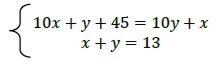
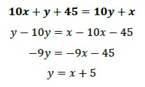
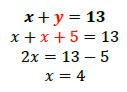
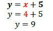
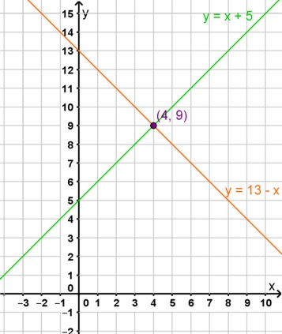

Método de Sustitución
Matías le dijo a Paula: “Pensé un número de dos cifras. Lo único que te voy a decir es que la suma de sus dígitos es 13 y que, si invertís las cifras, el número que se forma es 45 unidades mayor que el número que pensé.”
A partir de eso, planteamos el modelo matemático:
Las variables que intervienen son:
x: primer dígito que penso Matías
y: segundo dígito que penso Matías
Presentamos las ecuaciones que modelan la situación:

Se aplicará el método de sustitución para resolver el sistema.
El método de sustitución consiste en despejar una de las incógnitas en alguna de las ecuaciones y sustituir la expresión obtenida en la otra ecuación.
1º) En este ejemplo se despeja y en la primera ecuación:

2º) En la otra ecuación se sustituye y por x+5 y se resuelve:

3º) Se sustituye en la expresión y = x + 5 el valor obtenido para x y se calcula el valor de la otra incógnita:

La solución del sistema es el par ordenado (4; 9). Los dos dígitos que cumplen con las condiciones son 4 y 9.
Lo comprobamos:
-
Sumamos ambos dígitos y obtenemos 13.
-
El número que pensó Matías es 49 y si los invertimos es 94 que es 45 unidades mayor que el número pensado.

En la gráfica podemos observar que el punto donde se cortan ambas rectas es la solución a nuestro sistema.

En el siguiente video te presentamos un ejemplo de resolución con el método de sustitución.
Obra publicada con Licencia Creative Commons Reconocimiento Compartir igual 4.0